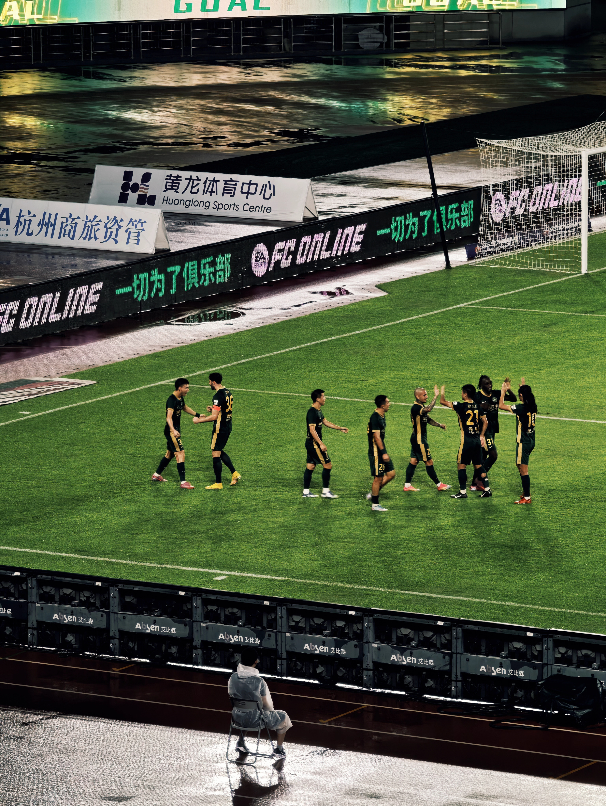

RESEARCHER · HANGZHOU, CHINA
Shenghuan
Miao.
缪盛欢Postdoctoral researcher
Ant Group × Zhejiang University
I study how the devices around us can understand the person behind the signals — and make everyday life a little better.
Personal intelligence,
across devices.
Our lives move between devices. I want personal intelligence to follow the person — connecting physical signals into a continuous understanding of everyday life.
My research connects wearable sensing, multimodal foundation models, and personal memory. I am exploring how shared representations of behavior, identity, health, and affect can support helpful, trustworthy interaction.
The work behind this directionMany perspectives. One person. Understanding that continues across devices and over time.
Sensing in the real world
Learning from diverse, incomplete signals in everyday settings.
Models that carry across
Shared representations across sensors, devices, and people.
Intelligence with continuity
Connecting context, identity, and memory to support the individual.
Deepening our models of people.
Full publication listA continuing thread: dynamic sensing, self-supervision, language alignment, and wearable foundation models.
Selected collaborative work
A path through
signals & people.
I received my Ph.D. in Computer Science and Technology from Zhejiang University in June 2026, conducting my research in the Pervasive Computing Lab.
Since September 2026, I have been a joint postdoctoral researcher at Ant Group and Zhejiang University.
Alongside academic research, I have worked on multimodal authentication for smart glasses and explored memory and reasoning for long egocentric videos.
Joint postdoctoral researcher
Ant Group × Zhejiang University
University mentor: Prof. Jinsong Han
Industry mentor: Weiqiang Wang
Ph.D. · Computer Science
Zhejiang University
Ph.D. advisor: Prof. Ling Chen
Thesis: Research on Foundation Models for Wearable Data
Reviewer for IMWUT, AAAI, TIP, TNNLS, and other venues. I enjoy sharing ideas, mentoring, and conversations that open up a new direction.
Life, in the frame.
Usually with a camera, on a bike, or watching a match. Often with post-rock in my headphones. Always curious about what is around the next corner.
